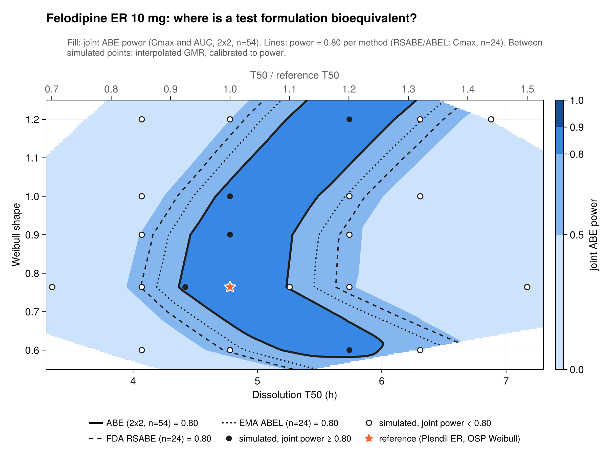

MBBE drug two · PK-Sim 12.2 · OSP Felodipine model
What we tested, what each test showed, and why the reference model is locked the way it is.
Work of 13–14 October 2026 · Record: project notes (not included)
Purpose: anyone asking later "why does the felodipine reference look like this?" should be able to follow the chain of evidence. Every number here comes from PK-Sim exports in Felodipine-BCSII/ and is logged in the project notes, sections 2 and 8 to 9.6.
Context
Release-rate CQAs: Weibull T50 × shape on Plendil ER. Cmax within-subject CV ≈ 36% (MHRA PAR), so ABE is primary, with RSABE as a sensitivity. Food effect.
Particle size and solubility. Plendil ER is surfactant-solubilised in an HPMC matrix, and no particle radius fits IR better than the shipped Weibull.
Fasted ER Cmax and AUC within 1.25-fold of observed. That's our criterion, stricter than OSP's 2-fold "validated".
Source: planning notes §3.9, §4, §9 · project notes §2–3
Felodipine is MBBE drug two. Metformin covers a low-variability BCS III product; felodipine adds a high-variability ER product on a real FDA product-specific guidance. The acceptance bar is 1.25-fold on both Cmax and AUC, because Cmax is the endpoint BE decisions turn on. The OSP library model is only validated to 2-fold.
Starting point
| Formulation | T50 | Lag | Shape |
|---|---|---|---|
| ER tablet (Weibull) | 286.95 min | 18.68 min | 0.764 |
| IR tablet (Weibull) | 46.50 min | 0 | 0.888 |
| Oral solution | dissolved | – | – |
Cmax pred/obs, 4 ER 10 mg studies
0.78 fails
AUC0–tlast pred/obs
1.03 passes
Studies: Edgar 1987, Bailey 1996, Bailey 2003, Gelal 2005 · geometric means · project notes §1, §2.2
OSP Felodipine-Model snapshot, loaded in PK-Sim 12.2 with no errors. Both tablets are fitted Weibulls; there is no particle formulation. Against the four ER 10 mg fasted studies attached to the "ER tablet 10mg" simulation, AUC passes our 1.25-fold criterion but Cmax is about 22% low. Per study, Cmax ranged from 0.63 (Bailey 1996) to 1.05 (Gelal 2005).
Day 1 · particle-size sensitivity
| IR formulation | Cmax p/o | tmax (h) | Peaks | log-RMSE |
|---|---|---|---|---|
| Weibull (shipped) | 1.32 | 1.2 | 1 | 0.58 |
| 1 µm | 2.29 | 0.85 | 1 | 0.85 |
| 3 µm | 1.31 | 1.2 | 2 | 0.89 |
| 10 µm | 1.11 | 7.25 | 1, late | 1.12 |
| 50 µm | 0.47 | 11.5 | 1, late | 1.42 |
Lowering Cmax means slower dissolution. That carries undissolved drug into the colon, where it dissolves late (a second peak) and escapes gut CYP3A4, so AUC rises.
Solubility is the same lever (rate ∝ S/r). Plendil ER is surfactant-solubilised, so neither is a real-product CQA.
Edgar 1987 IR 10 mg (n=12), solubility fixed at 12 µg/mL · selected radii from the 8-point scan · project notes §2.4, decision D3
This is the first sensitivity analysis, done on day 1. The particle-dissolution formulation replaced the IR Weibull, and radius was scanned from 0.5 to 50 µm. The trade-off is structural, not a tuning problem. PK-Sim 12.2 Parameter Identification also cannot fit particle radius; the "radius" entries it offers are physiology parameters and must never be fitted for formulation work. Particle radius as a CQA now needs a different BCS II drug.
Data audit
Simulation "ER tablet 10mg": Edgar 1987, Bailey 1996, Bailey 2003, Gelal 2005 (serum).
All four sit in OSP's PI "PI_IV+Solution+ER+DDI_additionalCL_3".
Simulation "ER tablet 10mg_test": Dresser 2002, Dresser 2017, Bailey 1998, Bailey 2000, Lundahl 1997, Madsen 1996.
In no PI, so these are OSP's external check. Never scored before 14 Oct.
Both simulations use the same individual, protocol and formulation; only the attached data differ. Both ship with output ending at 24 h, so every export here was re-run to 96 h. Guo 2007 ER 10 mg is in the snapshot but attached to no simulation.
Source: snapshot JSON (Felodipine-Model, master) · project notes §8
The day-1 notes said ten fasted ER 10 mg plasma datasets sat together. The PK-Sim tree showed only four, which led to reading the snapshot JSON for the actual split. This matters for how the result is judged: a model that misses on its own training data has a structural problem, not an overfitting problem.
Shipped model · all 10 fasted ER 10 mg studies
| Set | Study | Cmax p/o | AUC p/o |
|---|---|---|---|
| Train | Edgar 1987 | 0.73 | 0.87 |
| Train | Bailey 1996 | 0.63 | 1.07 |
| Train | Bailey 2003 | 0.76 | 1.04 |
| Train | Gelal 2005 (serum) | 1.05 | 1.23 |
| Test | Lundahl 1997 | 0.83 | 1.16 |
| Test | Dresser 2017 | 0.76 | 0.90 |
| Test | Dresser 2002 | 1.00 | 1.32 |
| Test | Bailey 2000 | 0.89 | 1.23 |
| Test | Bailey 1998 | 0.49 | 0.81 |
| Test | Madsen 1996 | 0.94 | 1.43 |
Geometric mean, train / test / all
Cmax 0.78 / 0.80 / 0.79
AUC 1.04 / 1.12 / 1.09
Predicted peak: 4.60 nM at 3.0 h. Observed peaks range 4.4–9.4 nM, mostly at 4–5 h.
Madsen's 24 h point (0.07 nM, near the LLOQ) drives its AUC of 1.43.
Exports: ER_ref_all11_96h.xlsx, ER_test6_96h.xlsx · AUC0–tlast by trapezoid on the observed grid · project notes §9
One simulated curve, scored against each study's observed means. Cmax predicted is taken within each study's sampling window. On Cmax alone the test set is borderline, which could argue for accepting the model. The next slide shows why the miss is not random scatter.
Where the error sits in time
0–2 h
1.23
too high
2–6 h (peak)
0.90
too low
6–12 h
1.22
too high
12–24 h (n=5)
3.18
much too high
First hypothesis: the shipped Weibull shape (0.764, below 1) front-loads release and drags out a long tail. If so, freeing the shape as well as T50 should fix it.
Geometric mean pred/obs of all observed points in each window, all 10 studies · project notes §9
Pooling every observed point by time window turns a borderline Cmax into a clear systematic pattern. A shape below 1 gives fast early release with a long tail. That made the release model the obvious first suspect, and the next section tests it.
Fix 1 · Weibull refit (Parameter Identification)
| Parameter | Shipped | Fitted ± 95% CI | Verdict |
|---|---|---|---|
| T50 | 287 min | 296 ± 52 min | no real change |
| Shape | 0.764 | 0.89 ± 0.08 | real change |
| Correlation | – | −0.53 | not confounded |
PK-Sim 12.2 PI on clone ER_ref_all11_96h · CI and correlation from the sensitivity rerun · project notes §9.1–9.2
Starts as far apart as T50 2452 min and shape 5.2 converged to the same point. The first run gave no confidence intervals; enabling sensitivity calculation produced them and shifted the estimates slightly. The shipped T50 lies inside the CI, and the shipped shape lies outside it.
Fix 1 · outcome
| Cmax | AUC | 0–2 h | 2–6 h | 6–12 h | 12–24 h | |
|---|---|---|---|---|---|---|
| Train, shipped | 0.78 | 1.04 | 1.31 | 0.86 | 1.19 | 1.83 |
| Train, refit | 0.77 | 1.07 | 1.02 | 0.87 | 1.31 | 1.82 |
| Test, shipped | 0.80 | 1.12 | 1.18 | 0.92 | 1.24 | 4.60 |
| Test, refit | 0.79 | 1.14 | 0.91 | 0.94 | 1.36 | 4.74 |
Fitted peak: 4.57 nM at 4.0 h, against 4.60 nM at 3.0 h shipped. Release can't raise the peak: faster release moves it earlier, which the early data rule out, and the tail stays high whatever release does. So the cause sits outside the formulation.
Values are geometric-mean pred/obs · fitted curve from Confidence Interval.xlsx · project notes §9.2
tmax now matches the data at 4 h, which is a real improvement. But the objective function weighs every log-scaled point equally, and the best compromise leaves the peak where it was. The observed profiles peak higher and fall faster at about the same AUC. Changing the input rate alone cannot produce that, which points to disposition.
Diagnostic · IV and oral solution (no release step)
| IV 1.5 mg, Lundahl 1997 | Model | Observed | Ratio |
|---|---|---|---|
| AUC (µM·min) | 3.63 | 4.59 | 0.79 |
| CL (mL/min/kg) | 14.7 | 11.6 | 1.27 |
| Vss (mL/kg) | 4985 | 3090 | 1.61 |
| t½ (h) | 8.1 | 5.7 | 1.42 |
Oral solution (Edgar 1987): AUC 1.03, Cmax 1.24.
Bioavailability: model ≈ 0.20, observed ≈ 0.15 (literature ~15%).
CL too high × F too high gives oral AUC about right. The extra Vss and t½ still flatten any slow-input profile: low peak, high tail.
Exports: IV_96h.xlsx, solution_96h.xlsx · observed values from PK-Sim NCA · IV and solution are different studies and subjects · project notes §9.3
IV pointwise: 0.58 to 0.83 over 0 to 7 h, about 1 at 9 to 13 h, 1.39 at 25 h. The ER tail excess (1.8 to 4.7) is bigger than the IV tail (1.39) or the solution tail (about 1), so a second, ER-only cause is likely: drug absorbed in the distal gut and colon with little gut-wall first pass. Caveat: F compares Edgar oral with Lundahl IV, so it is approximate.
Fix 2 · colonic CYP3A4 sensitivity scan
| Colon CYP3A4 | F | Cmax | AUC | 12–24 h tr / te |
|---|---|---|---|---|
| 0 (shipped) | ~0.20 | 0.789 | 1.089 | 1.83 / 4.60 |
| 10% of SI | 0.200 | 0.789 | 1.068 | 1.49 / 3.93 |
| 25% of SI | 0.186 | 0.788 | 1.054 | 1.27 / 3.48 |
| 50% of SI (chosen) | 0.176 | 0.787 | 1.042 | 1.12 / 3.14 |
The shipped model has CYP3A4 in the liver and small intestine (0.073) but 0 in every large-intestine segment. Drug released in the colon escapes gut first pass.
Human colon does express CYP3A4, at lower levels than the small intestine. A sourced point value is still open.
SI = small-intestine level 0.0728; 50% = 0.036 in Caecum to Rectum · Cmax/AUC = GM pred/obs, all 10 studies · project notes §9.4–9.5
A one-parameter sensitivity scan at 10, 25 and 50 percent of the small-intestine level. Results move in order with the level, which checks that the edits took. 50 percent brings the training tail to 1.12 and F toward the observed 0.15. Cmax stays at 0.79 because colonic absorption only shapes the tail. The test-tail excess comes mainly from the 24 h points of Madsen 1996 and Lundahl 1997.
Decision log
| Date | Decision | Why |
|---|---|---|
| 13 Oct | Drop particle size and solubility | No radius beats the Weibull; the trade-off is structural; the product is surfactant-solubilised |
| 13 Oct | ABE primary, RSABE on Cmax as a sensitivity | The FDA guidance specifies a 2-way design; Cmax ISCV ≈ 36% |
| 14 Oct | Judge on train and test separately | The 0.78 came from the fit data; the 6 test studies had never been scored |
| 14 Oct | Don't adopt the Weibull refit | Well identified, but Cmax 0.77 against 0.78: no gain |
| 14 Oct | Option C over B (disposition refit) | C targets the ER-only error and leaves OSP's DDI-validated disposition untouched |
| 14 Oct | Colonic CYP3A4 at 50% of SI | Physiological, fixes the tail and F; best of the scan |
| 14 Oct | Skip the second refit (5c); accept Cmax ≈ 0.79 | Colon CYP3A4 doesn't touch the peak; the residual bias is disposition (IV evidence) |
Formal record: planning notes §9 · project notes §3, §9.2–9.6
The three options weighed on 14 October were: A, accept and document the bias; B, recalibrate clearance and distribution against IV and solution; C, a targeted colonic-absorption check. B was avoided because it rests on one IV study of 12 subjects and could break OSP's jointly fitted DDI validation. C was run, and A is the outcome for the remaining Cmax bias.
The locked reference
T50 286.95 min, lag 18.68 min, shape 0.764. Individual "European_colonCYP3A4_50": CYP3A4 0.036 in all large-intestine segments.
Absolute Cmax is about 21% low. The cause is disposition (IV Vss ×1.6, t½ ×1.4), so the profile is flatter than observed.
Scope §3.9: #2 Cmax accepted with a bias; #3 fed arm not done; #4 no link to in-vitro dissolution. Sweep results are provisional.
project notes §9.6 · never "Update from" or "Commit to building block" on the colon clones: one resets the edit, the other spreads it
Risk to keep in mind: a flattened profile may make Cmax less sensitive to T50 and shape changes than it really is, so the sweep could understate how often BE fails. Plan: quantify that in the sweep by comparing the Cmax T/R spread against what observed variability implies. The red out-of-date icons on the colon clones are expected; they come from local edits to the individual and go away once simulations use the new individual building block.
T50 × shape sweep · done 16 Oct
| Scan | Values | Held at |
|---|---|---|
| T50 | 143, 201, 244, 287, 344, 430, 574 min (×0.5 to ×2) | shape 0.764 |
| Shape | 0.5, 0.6, 0.764, 0.9, 1.0, 1.2, 1.5 | T50 287 min |
| 2-D fill | 244, 265, 316, 344, 379, 413 min × shapes 0.6–1.2 | around the band |
| Lag | 18.68 min | all runs |
Population: 100 healthy adults, 18–55 y, BMI 18.5–30, 50% female. The same 100 in every run, so test vs reference is paired.
Why 100, not 24: felodipine needs n ≈ 52–56 per trial, so bootstrapping from 24 physiologies would repeat subjects heavily.
Exports per run: Pop_T50_<h>h_b<shape>-Results.csv and -PK-Analyses.csv, the same pair as metformin, analysed with the shared be_utils.jl (drug key, shape parser, WSV per drug × arm × endpoint, RSABE).
project notes §9.6, §9.17–9.20 · planning notes §2.2, §5.1, §7
The 2-D fill comes after the coarse cross shows where the BE boundaries sit, the same iterative approach as the metformin T50 sweep. The high first-pass (F about 15 percent) may make Cmax touchy, so a finer grid near the boundaries may be needed. Gate 1 before any population run: the new individual, run as a single simulation, has to reproduce the colon-50 clone (Cmax about 4.59 nM, F about 0.176).
Result · fasted safe space (provisional)

At the reference shape: T50 4.37–5.23 h (×0.91–1.09) gives joint ABE power ≥ 0.80 with n = 54.
Cmax decides it. At a fixed T50, Cmax is lowest near shape 0.8 and rises either side, so a slower T50 can be offset by a shape further from 0.8.
RSABE / ABEL (n = 24, Cmax) widen the band by about 0.2–0.4 h on each side.
27 population runs · felo_03_safespace_2d.jl → output_sweep_2d/ · project notes §9.19–9.20
Power is only simulated at the 27 points. Between them the figure interpolates the log GMR on a triangulation, then converts it to power with a monotone calibration fitted to all the runs. That reproduces the simulated joint power within 0.036 at every point. Interpolating power directly split the band into false islands, so it was not used. ABE window by shape (joint with AUC 0-t, corrected 16 Oct pm): 0.6 gives 5.25–5.84 h; 0.9 gives 4.47–5.28 h; 1.0 gives 4.67–5.49 h; 1.2 gives 5.24–6.10 h. The plot stops at shape 1.25 because above 1.2 the only support is one run at shape 1.5. Everything is provisional until the fed arm (gate 3) and the dissolution link (gate 4) close, and it carries the accepted Cmax bias of about 0.79.
Fed arm · decision 16 Oct
| Fed / fasted | Model (100 paired) | Plendil, observed |
|---|---|---|
| Cmax ratio | 0.96 | 1.6–2.8 |
| AUC ratio | 1.01 | 1.0–1.1 |
| Median tmax | 2.75 → 5.0 h | 4.5 → 4.5 h |
Release runs on a fixed clock, and the meal only slows stomach emptying, so the peak gets later and lower. Real Plendil sits in the upper stomach and empties in bursts, which gives late, high peaks.
Decision (scope §6 fallback): the claim covers the fasted safe space. Fed is reported as a statistical sensitivity: with fed variability (Cmax CV 36.5%, n = 56) the band is unchanged, 4.37–5.23 h at the reference shape.
Observed: US label, Sandoz CA monograph (Plendil arm), Weitschies 2005 · reference/fed-arm-literature.md · scope §10
The Apotex monograph shows a 3.5-fold Cmax increase, but its fasted and fed studies used different subjects with about twice the exposure, so it was not used as a target. The mechanism comes from magnetic marker monitoring (Weitschies 2005) and its model (Bergstrand 2009): food keeps the tablet in the proximal stomach, released drug accumulates and empties in bursts, and more of it gets past the gut wall. Neither effect can be set in PK-Sim's meal event. A release model with gastric retention would take about a week and is out of scope. AUC agreement (1.01) confirms the fed run kept all 23 OSP settings.
External check · Abrahamsson 1994
| Tablet | T50 · shape | Peak, model | Peak, observed |
|---|---|---|---|
| A (fast) | 1.7 h · 1.18 | 11.4 nM | 9.5 nM |
| B | 6.1 h · 0.94 | 4.8 nM | 5.0 nM |
| C (slow) | 19.8 h · 1.10 | 2.1 nM | 2.3 nM |
| Ratio B/C | 2.31 | 2.17 | |
| Ratio A/B | 2.36 | 1.90 |
What it tests: how strongly Cmax responds to release rate, which sets the width of the safe space.
Slow side matches within 6%. Fast side is overstated by about 25%, so the band's short-T50 edge is conservative.
Gate #4: the reference also sits mid-window of the USP limits read through the paper's in-vitro/in-vivo correlation. It's consistent, but not an exact correlation for Plendil itself.
Abrahamsson et al. Pharm Res 1994;11:1093 (n = 16) · reference/digitised/ · output_tablets1994/ · project notes §9.24–9.25
Tablets A, B and C are Astra hydrophilic-matrix felodipine ER 10 mg tablets that differ only in the viscosity of the HPMC. They were given in a four-way crossover with an oral solution to 16 young healthy men. Each tablet's in-vivo dissolution curve (paper Fig 4) was digitised and fitted with a Weibull at our lag, then run as a clone of Pop_ref. The observed values are peaks of the mean curves, so the model values are computed the same way. The model under-predicts AUC for the slowest tablet (C/B 0.80 vs 0.93) because colonic absorption is too low for very slow release; that region is far outside the BE band. Caveats: the Weibulls come from deconvolution and were digitised by eye; C's T50 is poorly identified because only 60 percent had dissolved by 24 h; and the population differs (the model is 50 percent female).
Open items
| Item | Why it matters |
|---|---|
| Sourced colon-to-SI CYP3A4 ratio | 50% is a scan choice, not yet a literature value |
| Fed arm (gate #3) | Closed as a limitation: model Cmax ratio 0.96 vs 1.6–2.8; fed reported as a sensitivity |
| Dissolution link (gate #4) | Closed as approximate: USP-consistent; Abrahamsson 1994 tablets reproduced within 1.25-fold |
| Cmax sensitivity check in the sweep | A flattened profile may understate how often BE fails |
| RSABE / ABEL edge at shape 0.6 | Upper bound sits on the design edge (6.31 h); needs one run if RSABE becomes primary |
| Guo 2007; Blychert 1990 market vs trial | An unscored study; a real two-formulation ER check of MBBE |
project notes §5, §7, §9.6, §9.21–9.25 · planning notes §3.9, §7, §10
The population, the reference and the fasted sweep are done. They decide whether the sweep result can be called final rather than provisional. If the disposition bias proves to matter for the safe-space boundaries, option B (recalibrate clearance and distribution against IV and solution) is still on the table.
Status at 16 Oct · fasted sweep done
| Step | Outcome |
|---|---|
| 14 Oct mismatch | Configure drops OSP's tablet time delay factor (0.0695). To a population it also drops the 22 gut P mucosa values. Re-entered by hand; cloning keeps them. |
| Colon-50 reference | Rebuilt and saved; matches the colon-50 clone to 3 × 10⁻⁵ |
| Population | Pop_ref: 100 adults, 50% female; every sweep run is a clone of it |
| T50 × shape sweep | 27 formulations, every export checked against its Weibull |
| Fed reference | Cmax fed/fasted 0.96 vs 1.6–2.8 observed: fed arm becomes a sensitivity |
Gate #4 closed as approximate: three Abrahamsson 1994 tablets are reproduced within 1.25-fold. Next: the remaining open items and the write-up.
Project: Felodipine_ER_colon50.pksim5 · overrides: reference/ER_tablet_10mg_sim_overrides.csv · project notes §9.10–9.25
The paused state from 14 October is resolved. None of the 14 October PK-Sim work had been saved, so the colon-50 setup was rebuilt on 15 October; the original individual was confirmed clean (CYP3A4 36h profile, SI 0.07, LI 0). A snapshot diff showed that the 22 P mucosa overrides are an OSP fitted value (0.0892 cm/min), not cosmetic. The option of running variations here through a .pkml export and the ospsuite R package is still untried.